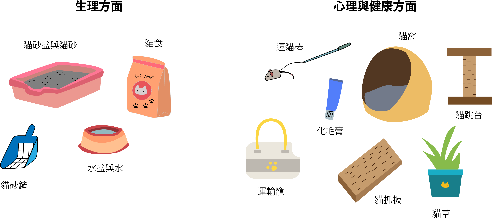

別衝動!
養貓前必做的
六項守則
養貓前必做的六項守則
從2011年至2016年
家貓的數量從372,951隻上升到733,207隻
家貓的數量從
372,951隻上升到733,207隻
上升將近2倍
飼養貓咪的風潮越來越盛行
貓咪好可愛!好想帶回家!
貓咪好可愛!
好想帶回家!
飼養前，
你做好萬全的準備了嗎?
你做好萬全的
準備了嗎?
養貓前必做的
六項守則
守則一：
審慎思考
資料來源:新芳伴侶動物醫院 朱品愫醫師
守則二：
領養代替購買
資料來源:新芳伴侶動物醫院 朱品愫醫師
守則三：
尋找貓咪的處所
資料來源:新芳伴侶動物醫院 朱品愫醫師
守則四：
準備貓咪的
生活必需品
不分年齡，都必須為貓咪準備的基本用品:
注意!1-2個月斷奶的幼貓另要準備 泡軟的貓飼料、雞肉泥
資料來源:新芳伴侶動物醫院 朱品愫醫師
守則五：
做好擔任奴才的
心理準備
學習替貓主子清潔的各種技巧:
資料來源:新芳伴侶動物醫院 朱品愫醫師
守則六：
請將牠們視為
自己的孩子，
用心去愛牠們
養一隻貓咪，牠的一生就託付給你!
在被萌到後，別衝動!想想自己是否能達成上述的守則吧!